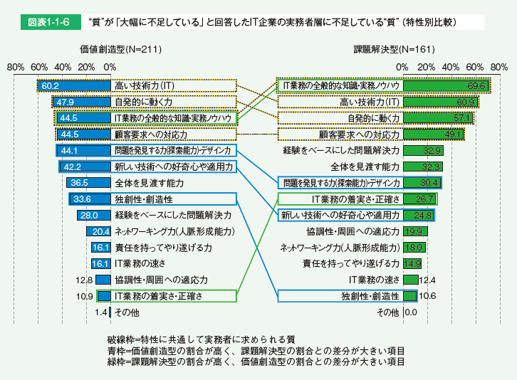
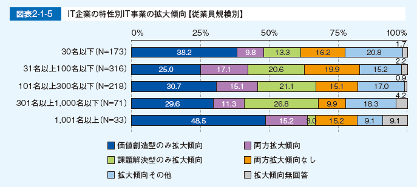
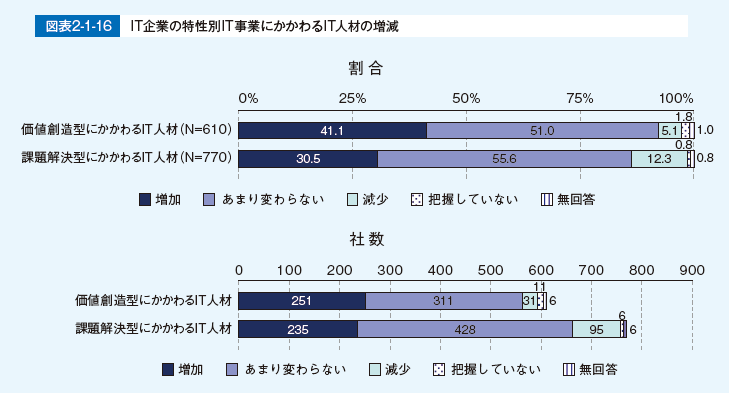
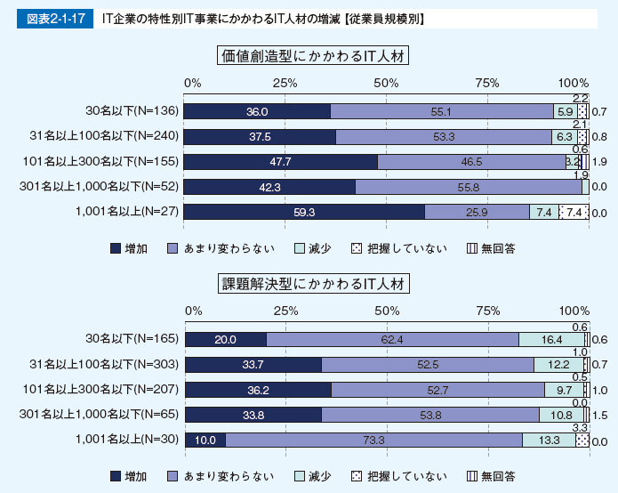

- DAX20-0402-3 IT人材白書【2018年4月IPA】
- 第1部「IT人材白書2018」の概要
- 第1章「IT人材白書2018」のメッセージとポイント
- １節 「IT人材白書2018」のメッセージ
- 1.サブタイトルに込めた意図
- Society 5.0 の主役たれ
- ～企業・組織から、個人・チームの時代へ～
- 2. IT 企業、ユーザー企業、IT人材個人に向けたメッセージ
- IT企業
- ユーザー企業
- IT人材は、IT活用をリードしていく存在でなければならない。ユーザー企業のすべてのIT人材は、IT人材ならではの経験や能力を生かし、高い技術力を持ち、IT企業、ベンチャー企業、事業部門、IT部門など多岐に渡るIT戦略パートナーの見極めを行い、企業や組織の枠を超えて、新しい価値の提供に寄与するべきである。
- IT人材個人
- 現状に安住することなく、企業の枠を超えた人脈を拡げ、さらに技術を高め、スキルを磨き、装備し、IT人材の知見や経験で次の時代をリードする価値を創造するプロになり、自らのチャンスを掴んで主役になれ！！
- ２節 「IT人材白書2018」のポイント
- 1. デジタル変革におけるIT 事業・IT 業務とIT人材の現状
- 図表1-1-1 特性の違いによるIT事業・IT業務の分類
- 特性別IT事業・IT業務の拡大傾向～従業員規模1,000名以下の企業では“価値創造型拡大傾向”は3割未満～
- 図表1-1-2 特性別IT事業・IT業務の拡大傾向【従業員規模別】
- 特性別“質”の不足感～価値創造型の方がよりIT人材の“質”の不足感が高い～
- 実務者層のIT人材に求められている“質”の違い～価値創造型は「独創性・創造性」が求められている～
- 図表1-1-5 実務者層に求められている“質”の特性による違い
- 実務者のIT人材に求められている“質”の違い（IT企業）～特性にかかわらず「高い技術力」が求められている～
- 図表1-1-6 “質”が「大幅に不足している」と回答したIT企業の実務者層に不足している“質”（特性別比較）
- 
- 実務者のIT人材に求められている“質”の違い（ユーザー企業）～価値創造型では5項目の“質”が強く求められている～
- 図表1-1-7 “質”が「大幅に不足している」と回答したユーザー企業の実務者層に不足している“質”（特性別比較）
- 2. 企業文化や風土とIT人材の“質” の関係
- IT人材の“質”の向上～人材のやる気を引き出すような企業文化・風土の醸成、施策の実施がカギ～
- 図表1-1-8 「企業文化・風土」「人材育成施策」「IT人材戦略」とIT人材の“質”の向上
- 人材の“質”向上にかかわる企業文化・風土～企業文化や風土として、7項目を設定～
- 図表1-1-9 人材の“質”向上にかかわる企業文化・風土
- IT人材の“量”と“質”の不足感と風土点～風土点が高いと“質”が「大幅に不足している」割合が低い～
- 図表1-1-10 IT企業におけるIT人材の“量”と“質”の不足感【風土点別】6
- 図表1-1-11 ユーザー企業におけるIT人材の“量”と“質”の不足感【風土点別】
- IT人材の“質”の向上のための施策の実施数と風土点～実施数が多いと風土点が高い～
- 図表1-1-12 IT人材の“質”の向上のための施策
- ◦ 実力に応じた待遇（年齢や勤続年数に依らない抜擢など）
- ◦ 多面的な視点での公正な評価（上司以外や顧客からの評価など）
- ◦ 努力やスキル向上、成果などを称える表彰
- ◦ 直属の上司でない指導者や相談者の導入（メンターなど）
- ◦ 適切な職種転換（適材適所、希望の受け入れ、見直しなど）
- ◦ 自己啓発支援（費用補助、学ぶ場と機会の提供など）
- ◦ 社内交流の活性化（組織や部門を越えた社員交流の場の整備、上司、同僚との良好な関係性の構築など）
- ◦ 社外活動の設定、参加促進（学会参加、コミュニティ活動、異業種交流会など）
- ◦ 勤務場所や時間の自由度の拡大
- ◦ 兼業や副業の許可
- ◦ 最新技術を利用しやすい場の整備
- ◦ その他
- 図表1-1-13 IT企業におけるIT人材の“質”の向上のための施策の実施数【風土点別】
- 図表1-1-14 ユーザー企業におけるIT人材の“質”の向上のための施策の実施数【風土点別】
- 第2章わが国のIT人材の全体像
- 1. 情報サービス産業1 における雇用の動向
- 図表1-2-1 情報サービス業と全産業の雇用判断（日本銀行「企業短期経済観測調査」を基に作成）
- 2. わが国のIT人材総数の推計
- （1）IT企業（IT提供側）のIT人材推計結果
- 図表1-2-2 IT企業（IT提供側）のIT人材数推計結果
- 図表1-2-3 IT企業（IT提供側）のIT人材の職種・レベル別推計結果
- （2）ユーザー企業（IT利用側）のIT人材推計結果
- 図表1-2-4 ユーザー企業（IT利用側）のIT人材数推計結果
- 図表1-2-5 ユーザー企業（IT利用側）の従業員数
- 図表1-2-6 ユーザー企業（IT利用側）のIT人材率
- 図表1-2-7 ユーザー企業（IT利用側）の IT人材の職種・レベル別推計結果
- 3. IT人材の総数推計
- 図表1-2-8 IT人材の総数推計
- 第3章IT人材白書2018調査事業概要
- 1. 実施調査概要
- （１）IT人材動向調査（IT企業/ユーザー企業/ネットサービス実施企業）
- 図表1-3-1 「IT人材動向調査」の概要
- 第2部 IT人材の現状と動向
- 第1章デジタル変革時代におけるIT事業・IT業務とIT人材の現状～ITの特性別調査～
- １節 IT 事業・IT 業務の現状
- 1. はじめに
- 企業においてこれまで主流であったIT活用は、業務の効率化やコスト削減が主な目的であった。課題は明らかであり、要件定義を基に開発手順や工数などを明確にし、計画的かつ確実にシステム開発を進めることが求められる。信頼性が重視され、ウォーターフォール型開発が適している。
- 一方、デジタル化におけるIT活用は、ビジネスを創出し、新しい仕事や価値を次々に生み出していくことが目的となる。あらかじめビジネスモデルの最終形を定義することは難しく、システム開発の道筋も明確ではない。事業者とシステム開発者は目的を深いレベルで共有し、スピード感を重視して、試行しながら開発を進めるアジャイル型の開発手法が適している。
- 図表2-1-1 特性の違いによるIT事業・IT業務の分類
- 2. IT 企業における特性別IT 事業の拡大傾向
- 図表2-1-2 IT企業における特性の違いによる分類が可能なIT事業の実施状況
- 図表2-1-3 IT企業の特性別IT事業の拡大・縮小傾向
- 図表2-1-4 IT企業の特性別IT事業の拡大傾向
- 図表2-1-5 IT企業の特性別IT事業の拡大傾向【従業員規模別】
- 
- 3. ユーザー企業における特性別IT 業務の拡大傾向
- 図表2-1-6 ユーザー企業におけるIT業務の特性の違いによる分類の可否
- 図表2-1-7 ユーザー企業の特性別IT業務の拡大・縮小傾向
- 図表2-1-8 ユーザー企業の特性別IT業務の拡大傾向
- 図表2-1-9 ユーザー企業の特性別IT業務の拡大傾向【従業員規模別】
- 4. IT 事業・IT 業務の進め方
- （1）IT企業とユーザー企業の連携
- （2）ユーザー企業のIT部門の役割と内製化の状況
- 1）IT部門に求められる役割
- 2）内製化の状況
- 5. まとめ
- （1）IT事業・IT業務の拡大傾向
- （2）IT企業とユーザー企業の連携
- COLUMN
- デジタル化に対する認識とIT事業・IT業務の特性別拡大傾向の関係
- ユーザー企業の業種とIT事業・IT業務の特性別拡大傾向の関係
- ２節 IT 企業におけるIT人材の現状
- 1. はじめに
- 価値創造型： ユーザー企業の事業の価値創造を目的としたIT活用／要件が不確実、スピード感を重視、主にアジャイル型で開発
- 課題解決型： ユーザー企業の既存事業の効率化やコスト削減を目的としたIT活用／要件定義が明確、確実性を重視、主にウォーターフォール型で開発
- 2. 特性別IT 事業にかかわるIT人材の増減
- 
- 
- 3. 特性別IT 事業にかかわるIT人材の“ 質” の不足感
- 4. まとめ
- ３節 ユーザー企業におけるIT人材の現状
- 1. はじめに
- 2. 特性別IT 業務にかかわるIT人材の増減
- 3. 特性別IT 業務にかかわるIT人材の“質” の不足感
- 4. まとめ
- ４節 IT人材に求められる“質” の違い
- 1. はじめに
- 【IT企業】
- 価値創造型： ユーザー企業の事業の価値創造を目的としたIT活用／要件が不確実、スピード感を重視、主にアジャイル型で開発
- 課題解決型： ユーザー企業の既存事業の効率化やコスト削減を目的としたIT活用／要件定義が明確、確実性を重視、主にウォーターフォール型で開発
- 【ユーザー企業】
- 価値創造型：価値創造を目的としたIT活用／要件が不確実、スピード感を重視、主にアジャイル型で開発
- 課題解決型： 既存システムの効率化やコスト削減を目的としたIT活用／要件定義が明確、確実性を重視、主にウォーターフォール型で開発
- 求められるIT人材の“質”
- 高い技術力（IT）
- IT 業務の全般的な知識・実務ノウハウ
- IT 業務の着実さ・正確さ
- IT 業務の速さ
- 協調性・周囲への適応力
- 自発的に動く力
- 経験をベースにした問題解決力
- 問題を発見する力（探索能力）・デザイン力
- 独創性・創造性
- 顧客要求への対応力
- ネットワーキング力（人脈形成能力）
- 責任を持ってやり遂げる力
- 全体を見渡す能力
- 新しい技術への好奇心や適用力
- その他
- 2. IT 企業の実務者層に求められる“質”
- （1）特性別IT事業のそれぞれの実務者層に不足している“質”
- （2）特性別の事業によって不足感が異なる“質”
- 3. ユーザー企業の特性別IT 業務の実務者に求められる“質”
- （1）特性別IT業務のそれぞれの実務者層に不足している“質”
- （2）特性別のIT業務によって不足感が異なる“質”
- 4. まとめ
- 図表2-1-35 特性に共通して実務者層に求められる“質”19
- 図表2-1-36 実務者層に求められる“質”の特性による違い
- COLUMN
- “デザイン思考”についての認識の高まり
- ５節 IT人材の育成と獲得・確保
- 1. はじめに
- 2. IT 企業の事業戦略とIT人材戦略の策定およびIT人材の育成と獲得・確保方法
- （1）IT人材戦略
- 図表2-1-37 IT企業が事業戦略に対して明確なIT人材戦略を策定しているか【拡大傾向別】
- 図表2-1-38 IT企業のIT人材戦略の内容【拡大傾向別】23
- （2）IT人材の獲得・確保方法
- 図表2-1-39 IT企業がIT人材を獲得・確保した方法【拡大傾向別】24
- 図表2-1-40 IT企業が最も多くIT人材を獲得・確保できた方法【拡大傾向別】
- 3. ユーザー企業の事業戦略とIT人材戦略の策定およびIT人材の育成と獲得・確保方法
- （1）IT人材戦略
- 図表2-1-41 ユーザー企業が事業戦略に対して明確なIT人材戦略を策定しているか【拡大傾向別】
- （2） IT人材の獲得・確保方法
- 図表2-1-42 ユーザー企業がIT人材を獲得・確保した方法【拡大傾向別】25
- 4. まとめ
- IT企業、ユーザー企業ともに、事業戦略として事業領域の変化を打ち出している企業においても、明確なIT人材戦略を打ち出せていない企業が多い。
- 必要な“質”を満たすIT人材の確保ができるかどうかは、企業のデジタル化の成否に直結する。自社の将来的な事業・業務を見据えたIT人材戦略を打ち出し、求められる人材の育成、獲得・確保をしていくべきである。
- 価値創造型のIT事業・IT業務にかかわるIT人材の“質”の不足感は高い。しかし、外部から“質”を満たすIT人材を獲得するには限界があり、従来の人材のスキル転換、育成も重要になる。
- IT事業やIT業務の拡大が続く状況化では、現状の（男性中心・多様性のない）IT人材の中で、人材の獲得・確保を増大し続けるのは限界がある。将来を見据え、これからのIT業界には、シニア人材、女性、他業界からの人材、外国人など人材の多様性を意識したIT人材戦略が必要である。
- ６節 未来に向けて
- 1. 社会の変化とIT人材
- 2017年度調査では、企業におけるIT事業・IT業務を価値創造型と課題解決型に分類して調査を実施し、その結果を1節から5節にかけて分析してきた。これは、わが国が主導的に第4次産業革命を推進し、世界に先駆けてSociety 5.0 を実現するために、企業による価値創造型のIT活用が欠くべからざる原動力であるという認識に基づくものである。
- Society 5.0 は、人類の社会が狩猟社会から農耕社会、工業社会、情報社会と変化してきた次の段階にあたるものとしてとらえられており、我々は今まさにSociety 5.0 に至る道程である第4次産業革命に踏み出したところである（図表2-1-44）。このような変化の背景には、フィジカル空間（Physical）とサイバー空間（Cyber）をデジタル化・ネットワーク化で融合させるIoTやビッグデータ、AI、ロボットなどの技術の急速な発展がある。身近に目にするようになったスマートスピーカーやドローンの爆発的な普及はその一端である。
- 図表2-1-44 社会・技術・産業の在り方の変化（Society 5.0 への流れ）
- これまでの情報社会（4.0）からSociety 5.0 への技術の変化を、内閣府が作成した資料（図2-1-45）を基に説明する。
- クラウド化が進展したこれまでの情報社会（4.0）では、サイバー空間に存在するクラウド上のデータベースにインターネットを経由して“人”がアクセスして、情報を入力したり、情報を引き出すことで分析やフィジカル空間での活用を行ってきた。
- 一方、Society 5.0 では、フィジカル空間からIoT機器などによって膨大な情報がサイバー空間にビッグデータとして集積され、サイバー空間でAIによって解析される。その解析結果はフィジカル空間の人やモノに様々な形でフィードバックされ、人によって活用・評価される。そして評価結果の情報は再びサイバー空間へと受け渡され、
- AIによって解析される。そのような自律的なフィードバックのループによって、自動車の自動運転のような新たな付加価値が産業や社会にもたらされることになる。その自律的なフィードバックのループをIT人材が考え、データに新たな価値を乗せる役割を担う。
- 図表2-１-45 これまでの情報社会（4.0）からSociety 5.0 への技術の変化
- 現状でも各企業は、自社の製品やサービスに関する様々な情報のデータ化を進めているが、それぞれバラバラに管理されて連携していない。企業の枠を越えてデータを流通させることで、人、モノ、技術、組織等をつなげ、新たな価値創造を図る“Connected Industries”が、わが国の産業が目指すべき姿（コンセプト）として提唱されている（図表2-１- 46）。
- 図表2-１-46 Connected Industriesの考え方
- Society 5.0 では、個人の生活も大きく変わることが予想される。すでにスマートスピーカーを利用すると、音声で商品を注文したり、好みの楽曲を再生したり、照明やエアコンなど他の家電を操作したりできるようになっている。
- スマートスピーカーには、音声を認識し、前後の文脈を判断して、適切なタスクを実行するための“AIアシスタント”が組み込まれており、インターネットを経由して機械学習やビッグデータの蓄積・解析機能を備えたサーバと接続することでサービスが提供される。
- フィジカル空間とサイバー空間を密接につなげるには、情報通信技術だけでなく、AIやビッグデータ解析といった高度なIT技術が必須となり、そこには高度なIT人材が必要となる。
- これまでの情報化社会では、主に自動化や効率化を目的にITが使われてきた。しかしSociety 5.0 では、快適な暮らしの実現や社会課題の解決といった、人間を中心とした付加価値を提供するためにITが活用されるようになる。
- 技術ドリブンで局所的な自動化や効率化を達成するのとは異なるITの活用が求められる。
- 第4次産業革命で新たに生み出されるビジネスモデルには、ITの高度な活用やデータの活用が必須であり、そのような新規ビジネスを実現するには、IT企業だけでなくあらゆる産業でITの素養を持った人材が必要になる。
- 2. 提言
- （1）IT事業・IT業務の方向性の変化とIT産業構造の改革
- （2）事業戦略に伴ったIT人材戦略の策定
- （3）新たな時代に対応した人材施策
- （4）環境の整備
- 3. まとめ
- ITの役割も変わり、IT人材のあり方も変わっていく。課題解決型のIT事業・IT業務にかかわるIT人材もその変化のなかにいる一員であり、これまでと同じ能力で同じやり方を続けていたら産業構造の変化によって淘汰される可能性がある。
- 一方で、自らを変えるチャンスでもある。IT人材の個々人も時代の変化に敏感になり、その流れから取り残されないようにする必要がある。
- 課題解決型のIT人材は既存の事業を円滑に進めていく上で依然として重要であることは変わりない。
- デジタル化においては価値創造型のIT人材がけん引役となって方向性を決定していく役割を担い、課題解決型のIT人材は推進する力となる。価値創造型のIT人材と課題解決型のIT人材が手を組んで両輪をバランス良く回すことが必要である。
- IT人材はSociety 5.0 を実現する大きな力であり、根幹を支えるものである。覚悟を持ってIT人材ひとりひとりが主役であるという意識を持ち、プロとしてのスキルを磨く必要がある。
- 図表2-1-47 Society 5.0 に向けてIT人材が目指すべき姿
- 第2章企業文化や風土とIT人材の“質”の関係
- 第4次産業革命の進展に伴い、産業構造や就業構造が劇的に変化することで、AIやロボットに代替可能な低付加価値の仕事が失われることが懸念されている。
- この変化は、IT企業、ユーザー企業を問わず、IT人材に大きな影響を与えることが予想される。
- IT人材の雇用の“質”と“量”を確保しつつ、Society 5.0 を実現するには、全体的なIT人材の“質”の向上やスキル転換、成長分野への人材の流動性などが重要な課題となる。
- 2017年度調査では、企業文化や風土とIT人材の“質”の関係に注目し、調査した結果を掲載する。
- １節 企業文化や風土とIT人材の“質”
- 1. はじめに
- 図表2-2-1 新産業構造ビジョン
- 図表2-2-2 第４次産業革命による就業構造変革の姿
- 2.リーダー層の育成と質の向上
- 図表2-2-3 デジタルトランスフォーメーションにおける経営者とリーダーの体制／デジタル化をリードする人材と携わる人材（「IT人材白書2017」より再掲）
- 経営者の役割
- デジタル化の重要性を認識し、経営方針等に反映
- 変化に対する姿勢を社内、社外へ発信
- リーダー的人材がデジタル化を進める上でのサポート
- リーダーの役割
- デジタル化を進めるための具体的施策の決定
- デジタル関連の新事業実施
- 経営への提言（IT、ビジネス）
- 図表2-2-4 デジタル化を推進するリーダーが育成された環境（「IT人材白書2017」より再掲）
- 3. IT人材育成の制度整備と業務（現場）での育成の取り組み
- 図表2-2-5 IT人材育成に関する会社の制度整備（2016年度調査）
- 4. 企業文化や風土に関する調査結果
- 図表2-2-6 人材の“質”向上にかかわる企業文化・風土
- （1）IT企業の企業文化や風土に関する調査結果
- 図表2-2-7 IT企業において自社の企業文化や風土に当てはまるもの
- （2）ユーザー企業の企業文化や風土に関する調査結果
- 図表2-2-8 ユーザー企業において自社の企業文化や風土に当てはまるもの5
- （3）ネットサービス実施企業の企業文化や風土に関する調査結果
- 図表2-2-9 ネットサービス実施企業において自社の企業文化や風土に当てはまるもの
- 5. 企業文化や風土に関する調査結果の点数化
- （1）IT企業の風土点の分布
- （2）ユーザー企業の風土点の分布
- （3）ネットサービス実施企業の風土点の分布
- 6. 企業文化や風土が従業員に与える影響と風土点
- 7. IT人材の“量” と“質” の不足感と風土点
- （1）IT企業のIT人材の“量”と“質”の不足感と風土点
- （2）ユーザー企業のIT人材の“量”と“質”の不足感と風土点
- （3）ネットサービス実施企業のIT人材（ネット系）の“量”と“質”の不足感と風土点
- 8. まとめ
- ２節 企業文化や風土と人材育成施策などの関係
- 1. はじめに
- 前節では、風土点が高いほど、IT企業、ユーザー企業、ネットサービス実施企業のいずれにおいても、企業文化や風土が社員の自律的な成長や行動に良い影響を及ぼすと考えており、“質”の不足感も低い傾向にあることが明らかになった。
- 本節では、従業員規模や、IT人材戦略、IT人材の“質”の向上のための施策と風土点の関係を見ていく。
- 2. 従業員規模と風土点
- （1）IT企業の従業員規模と風土点
- （2）ユーザー企業の従業員規模と風土点
- （3）ネットサービス実施企業の従業員規模と風土点
- 3. IT人材戦略の有無と風土点
- （1）IT企業のIT人材戦略の有無と風土点
- （2）ユーザー企業のIT人材戦略の有無と風土点
- （3）ネットサービス実施企業のIT人材戦略の有無と風土点
- 4. IT人材の“質” の向上のための施策の実施の有無と風土点
- （1）IT企業におけるIT人材の“質”の向上のための施策の実施の有無と風土点
- （2）ユーザー企業におけるIT人材の“質”の向上のための施策の実施の有無と風土点
- （3）ネットサービス実施企業におけるIT人材（ネット系）の“質”の向上のための施策の実施の有無と風土点
- 5. IT人材の“ 質” の向上のための施策の実施状況と風土点
- （1）IT企業におけるIT人材の“質”の向上のための施策の実施状況と風土点
- （2）ユーザー企業におけるIT人材の“質”の向上のための施策の実施状況と風土点
- （3）ネットサービス実施企業におけるIT人材（ネット系）の“質”の向上のための施策の実施状況と風土点
- 6. まとめ
- 「IT人材白書」では、IT人材の“質”不足の改善に向けた企業の取り組みに関して、主に人材育成施策の観点から調査を行ってきたが、2017年度調査では、新たな視点として、企業文化や風土に着目して調査を実施した。
- 前節では、IT企業、ユーザー企業、ネットサービス実施企業のいずれにおいても、企業文化や風土が良好な企業（風土点が高い企業）ほど、企業文化や風土が社員の自律的な成長や行動に良い影響を及ぼすと考えていることがわかった。また、企業文化や風土が良好な企業ほど、IT人材の“質”の不足感も低い傾向にあることが明らかになった。
- 本節では、IT企業、ユーザー企業、ネットサービス実施企業のいずれにおいても、企業文化や風土が良好な企業ほど、IT人材戦略を策定している割合が高いことがわかった。また、IT人材の“質”の向上のための従業員満足度・モチベーション向上などに関する施策を「重要であると認識し、実施している」割合が高く、施策の実施数も多くなる傾向にあることがわかった。
- 良好な企業文化や風土の醸成には、様々な要素が影響する。企業文化や風土は形として見えないものであり、企業文化や風土を醸成する方策の答えはひとつではないが、自社の状況や目指すべきビジョンや価値観を明確にして、事業戦略やIT人材戦略に合った施策を実施していくとよいだろう。
- 現在進行しつつある第4次産業革命下では、IT人材に高い能力やスキル転換が求められるようになる。また、当面はIT人材の“質”不足も大きな課題である。図表2-2-37に示すように、人材の「意欲・モチベーション向上」を引き出すような企業文化・風土の醸成、IT人材戦略の策定、モチベーション向上のための施策を実施し、個々の人材の自律的な成長を促し、IT人材の“質”を上げることで、様々な課題の根幹的な解決にもつながることが期待される。
- 図表2-2-37 「企業文化・風土」「人材育成施策」「IT人材戦略」とIT人材の“質”の向上
- COLUMN
- 風土点とIT 事業・IT 業務の特性別拡大傾向の関係
- IT 人材が能力を発揮できる組織作りと人材の自律的成長を促す人材育成施策
- 第3 部 2017 年度調査結果
- 第1章IT企業におけるIT人材の動向
- 1 現在の事業
- 従業員規模にかかわらず「システム受託開発」がトップ
- 2 2～3年前と比較して拡大した事業
- 1,001名以上の企業では「IoT、ビッグデータ、AI関連サービスの開発・提供」が最も拡大
- 3 IT人材の“量”に対する過不足感
- 再び不足感が高まったIT人材の“量”
- 4 IT人材の“量”に対する不足感の2016年度からの変化
- 300名以下の企業で特に“量”の不足感が高まる
- 5 IT人材の“質”に対する不足感
- IT人材の“質”でも再び不足感が高まる
- 6 事業ごとのIT人材の“量”と“質”の不足・余剰感
- 「システム受託開発」、「IoT、ビッグデータ、AI関連サービスの開発・提供」、「組込みソフトウェア開発」に高い不足感
- 7 IT人材における女性の割合／管理職の割合
- 7割強のIT企業で女性のIT人材の割合は20%以下
- 8 外国籍のIT人材の割合
- 外国籍のIT人材を雇用しているIT企業は3割弱
- COLUMN
- 日本の情報通信業の外国人雇用状況
- 9 シニア人材（定年後の再雇用者）の割合
- シニアIT人材を雇用しているIT企業は4割強
- COLUMN
- 労働力人口に占める高齢者の比率は上昇
- 10 職種別のIT人材数とレベルの把握状況／職種
- 最も高い割合の職種は「アプリ系技術者」
- 11 IT人材のレベル／重要と考え育成していきたいIT人材
- 従業員規模が大きくなるに従い、コンサルタント、プロジェクトマネージャ等の人材の育成を重視する傾向
- 12 IT人材戦略
- 1,001名以上の企業は事業領域の変化を打ち出し、明確なIT人材戦略を策定している割合が高い
- 13 IT人材の獲得・確保方法
- 30名以下の企業では、「中途採用」で最も多くIT人材を確保
- 14 新卒IT人材を採用した際に重点的に採用した学生の専攻／情報系学部・学科出身の新卒IT人材を採用する上で魅力的な能力、スキル
- いずれの従業員規模でも「こだわらない」がトップ、従業員規模が小さいほど「情報系」の学生を重点的に採用
- 15 スキル把握の方法
- IT人材のスキルの把握方法は「情報処理技術者試験」、「自社の独自基準」が高い
- 16 情報セキュリティに携わる人材の育成の取り組み
- 従業員規模にかかわらず「情報処理技術者試験で情報セキュリティ関連資格の取得を推奨」が高い
- 17 情報セキュリティ専門技術者の確保状況／育成、獲得・確保方法
- 情報セキュリティ専門技術者を「確保できていない」IT企業は3割強
- 18 新たな変化に対する認識
- 1,001名以上のIT企業の約7割が「すでに変化の中にいる」と認識
- 19 IoTやビッグデータ、AI等の技術を活用したサービスの提案、支援、協業の実施状況①
- 1,001名以上のIT企業ではIoTやビッグデータを活用したサービスの提案、支援、協業の実施割合が高い
- 20 IoTやビッグデータ、AI等の技術を活用したサービスの提案、支援、協業の実施状況②
- 1,001名以上のIT企業ではAI（機械学習など）を活用したサービスの提案、支援、協業の実施割合が高い
- 21 IoTやビッグデータ、AI等の技術の活用の進め方／人材の確保状況
- IoTやビッグデータ、AI等の技術の活用は、IT部門、事業部門と連携して進めている割合が高い
- 22 特性の違いによる分類が可能なIT事業の実施状況
- 約6割のIT企業が“課題解決型”20と“価値創造型”に分類可能なIT事業を実施
- 23 “課題解決型”のIT事業規模の拡大・縮小／IT事業にかかわるIT人材の増減
- 分類可能なIT事業を行っているIT企業の3割強で“課題解決型”のIT事業が拡大
- 24 “課題解決型”のIT事業にかかわるIT人材の“質”に対する不足感
- “課題解決型”IT事業を行っているIT企業の8割強がIT事業にかかわるIT人材の“質”に不足感
- 25 “課題解決型”IT事業の実務者層に不足している“質”
- “課題解決型”IT事業の実務者に不足している“質”は「高い技術力」、「IT業務の全般的な知識・実務ノウハウ」等
- 26 “価値創造型”のIT事業規模の拡大・縮小／IT事業にかかわるIT人材の増減
- 1,001名以上のIT企業では“価値創造型”のIT事業規模が拡大する割合が高い
- 27 “価値創造型”のIT事業にかかわるIT人材の“質”に対する不足感
- “価値創造型”IT事業を行っているIT企業の8割強がIT事業にかかわるIT人材の“質”に不足感
- 28 “価値創造型”IT事業の実務者層に不足している“質”
- 1,001名以上のIT企業では「独創性・創造性」の不足感が高い
- 29 分類可能なIT事業を行っていないIT企業の実務者層に不足している“質”
- 従業員規模にかかわらず「高い技術力」、「IT業務の全般的な知識・実務ノウハウ」に高い不足感
- 30 “質”の向上のための従業員満足度、モチベーション向上等に関する会社の取り組みの重要性の認識と施策の実施状況／役立つと思う施策
- 従業員規模が大きくなるほどモチベーション向上のための取り組みを重要視し、施策の実施割合が高い
- 31 “質”の向上のための従業員満足度、モチベーション向上等に関する施策の効果①
- 「実力に応じた待遇」を実施しているIT企業の約7割が効果を実感
- 32 “質”の向上のための従業員満足度、モチベーション向上等に関する施策の効果②
- 「適切な職種転換」を実施しているIT企業のうち6割台半ばが効果を実感
- 33 “質”の向上のための従業員満足度、モチベーション向上等に関する施策の効果③
- 「勤務場所や時間の自由度の拡大」は従業員規模が小さなIT企業ほど効果を実感
- 34 “質”の向上のための従業員満足度、モチベーション向上等に関する施策の効果④
- 「兼業や副業の許可」を実施している企業はわずか
- 35 企業文化や風土①
- 従業員規模が小さいほど「社内の風通しがよく、情報共有がうまくいっている」割合が高い
- 36 企業文化や風土②
- 従業員規模が小さいほど「遊び心」を持ち「新しいことにチャレンジ」する割合が高い
- 37 企業文化や風土③
- いずれかの企業文化や風土が当てはまると回答しているIT企業の8割強が社員に良い影響があると認識
- 第2章ユーザー企業におけるIT人材の動向
- 図表3-2-1 回答のあったユーザー企業の主な業種、従業員規模
- 図表3-2-2 回答のあったユーザー企業のCIO、CISO設置状況
- 1 IT関連実施体制（IT部門の有無）
- IT部門を設置しているユーザー企業は約8割
- 2 ITに関する業務の担当部門
- IT部門が担う割合が高いのは「全社ITの企画」、「情報セキュリティリスク管理」
- 3 IT部門と事業部門における今後のIT業務の増減の見通し
- IT部門は「情報セキュリティリスク管理」、事業部門は「データ分析などの高度化による情報活用」が増加
- 4 データ収集、蓄積、活用状況／社内にITのスキルを蓄積・強化するための内製化状況
- 社内にITのスキルを蓄積・強化するためにIT業務の内製化を進めている企業は全体で5割弱
- 5 現在利用しているIT外部サービス
- 従業員規模が大きいほど、IT外部サービスを利用している割合が高い
- 6 2～3年前と比較して利用を拡大したIT外部サービス
- 1,001名以上のユーザー企業は5割強が「SaaSサービスの利用」を拡大
- 7 IT人材の“量”に対する過不足感／2016年度からの変化
- 人材の“量”が「大幅に不足している」ユーザー企業の割合は年々高くなる傾向
- 8 IT人材の“質”に対する不足感
- IT人材の“質”の不足感は過去3年間でほぼ変わらず
- 9 IT人材における女性の割合／管理職の割合／外国籍の割合
- 7割強のユーザー企業で女性のIT人材の割合は2割以下
- 10 職種別のIT人材数とレベルの把握状況／職種
- 職種別のIT人材数、人材のレベル両方を把握している企業は約6割
- 11 IT人材のレベル／重要と考え育成していきたいIT人材
- 従業員規模が大きい企業はマネジメント人材、小さい企業は社内システム導入・開発・保守、運用管理などの人材を重視
- 12 IT人材戦略
- 「明確なIT人材戦略を策定している」割合は1割台半ば
- 13 IT人材の獲得・確保方法
- ユーザー企業のIT人材の獲得・確保は「中途採用」が中心
- 14 新卒IT人材を採用した際に重視している学生の専攻／情報系専攻の出身者である新卒IT人材を採用する上で魅力的な能力、スキル
- 従業員規模にかかわらず情報系専攻の出身者である新卒IT人材は「一般情報処理の知識」を重視
- 15 スキル把握の方法
- IT人材のスキルの把握方法は「情報処理技術者試験」と「自社の独自基準」が高い
- 16 情報セキュリティに携わる人材の育成の取り組み
- 育成の取り組みは「情報セキュリティ関連の研修を受講させている」が主流
- 17 情報セキュリティ専門技術者の確保状況／育成、獲得・確保方法
- 情報セキュリティ専門技術者を「確保できていない」ユーザー企業は4割台半ば
- 18 変化に対する認識／変化に対応するためにIT部門に求められている役割
- ユーザー企業の22.4%が「すでに変化の中にいる」と認識
- 19 IoTやビッグデータ、AI等の技術を用いた事業や業務の実施状況①
- 1,001名以上のユーザー企業は「機器（センサー、GPSなど）からの自動データ取得活用」の実施割合が高い
- 20 IoTやビッグデータ、AI等の技術を用いた事業や業務の実施状況②
- 1,001名以上のユーザー企業は「AI（機械学習など）の利活用」、「IoTやビッグデータ、AI等の技術全般に対する判断・評価」の検討割合が高い
- 21 IoTやビッグデータ、AI等の技術の活用の進め方／人材の確保状況
- 技術活用は「IT部門中心」と「IT部門以外の部門や部署がそれぞれ」進めている割合が高い
- 22 IT業務の特性の違いによる分類の可否
- 5割台半ばのユーザー企業がITに関する業務を“課題解決型”22と“価値創造型”23に分類可能
- 23 “課題解決型”IT業務の規模の拡大・縮小／IT業務にかかわるIT人材の増減
- IT業務を分類可能なユーザー企業の3割弱で“課題解決型”のIT業務が拡大
- 24 “課題解決型”IT業務にかかわるIT人材の“質”に対する不足感
- IT業務を分類可能なユーザー企業の8割弱が“課題解決型”にかかわるIT人材の“質”に不足感
- 25 “課題解決型”IT業務の実務者層に不足している“質”
- 従業員規模が大きいほど“課題解決型”IT業務の実務者層の「全体を見渡す能力」に高い不足感
- 26 “価値創造型”IT業務の規模の拡大・縮小／IT業務にかかわるIT人材の増減
- IT業務を分類可能なユーザー企業の約5割で“価値創造型”のIT業務が拡大
- 27 “価値創造型”IT業務にかかわるIT人材の“質”に対する不足感
- 従業員規模にかかわらず“価値創造型”IT業務にかかわるIT人材の“質”の不足感は高い
- 28 “価値創造型”IT業務の実務者層に不足している“質”
- 1,001名以上のユーザー企業では「独創性・創造性」の不足感が高い
- 29 IT業務の分類が不可能と回答した企業の実務者層に不足している“質”
- 従業員規模にかかわらず「IT業務の全般的な知識・実務ノウハウ」に高い不足感
- 30 “質”の向上のための従業員満足度、モチベーション向上等に関する会社の取り組みの重要性の認識と施策の実施状況／役立つと思う施策
- モチベーション向上のための取り組みを実施しているユーザー企業は約2割
- 31 “質”の向上のための従業員満足度、モチベーション向上等に関する施策の効果
- 施策を実施しているユーザー企業の約7割が「社内交流の活性化」、「自己啓発支援」の効果を実感
- 32 企業文化や風土①
- 「自社のビジョンや価値観が従業員に行き渡っている」と自社を評価しているユーザー企業は全体の5割強
- 33 企業文化や風土②
- 「多様な価値観を受け入れる」と自社を評価しているユーザー企業は全体の約3割
- 34 企業文化や風土③
- いずれかの企業文化や風土が当てはまると回答しているユーザー企業では全体の7割台半ばが社員に良い影響があると認識
- 第3章ネットサービス実施企業におけるIT人材（ネット系）の動向
- 第4 部 IT人材育成の主な活動（IT人材育成本部）
- １節 わが国におけるIT利活用の促進
- １.「Connected Industries」の実現に向けて
- ２節 情報処理技術者試験・情報処理安全確保支援士試験の動向等
- 1. 情報処理技術者試験・情報処理安全確保支援士試験の統計情報
- （1）試験制度の変遷等
- （2）応募者数・受験者数・合格者数の累計（1969年度～2017年度）
- 2. ユーザー企業も活用する“ 情報処理技術者試験” の価値
- （1）情報処理技術者試験の活用状況
- （2）情報処理技術者試験の活用理由等
- 図表4-1-7 IT企業、ユーザー企業の情報処理技術者試験の活用理由
- 図表4-1-8 情報処理技術者試験受験者の勤務先別の割合（2017年度）5 無回答を除く
- ３節 情報処理安全確保支援士
- 1. 情報処理安全確保支援士
- （1）登録メリット
- （2）登録状況
- （３）講習実施状況
- （４）今後について
- ４節 セキュリティ・キャンプ事業について
- 1.セキュリティ・キャンプ事業の概要
- 2.セキュリティ・キャンプ全国大会2017 の実施概要
- 3.セキュリティ・キャンプ地方大会の実施概要
- ５節 未踏IT人材発掘・育成事業
- 1. 概要
- 2. 未踏事業の歩みとクリエータの活躍状況
- 3. 起業または事業化に強い関心を持つ未踏的 IT 人材育成への新たな取組み
- 4.「未踏」を冠とした事業の拡充
- ６節 スキル標準と i コンピテンシ ディクショナリ
- 1. 第４次産業革命に向けたIT人材の育成
- （1）データサイエンス領域
- 図表4-1-19 ITSS+データサイエンス領域のタスク
- （2）セキュリティ領域
- 図表4-1-20 ITSS+セキュリティ領域の専門分野の位置付け
- 2. i コンピテンシ ディクショナリ
- 図表4-1-21 iCDの利活用
- （1）iCDコンテンツの進化
- 図表4-1-22 iCDコンテンツの進化
- （2）iCD活用企業の拡大
- 図表4-1-23 iCD活用ワークショップ参加企業数（延べ100社）
- （3）グローバル連携
- 図表4-1-24 iCDの主な国際連携